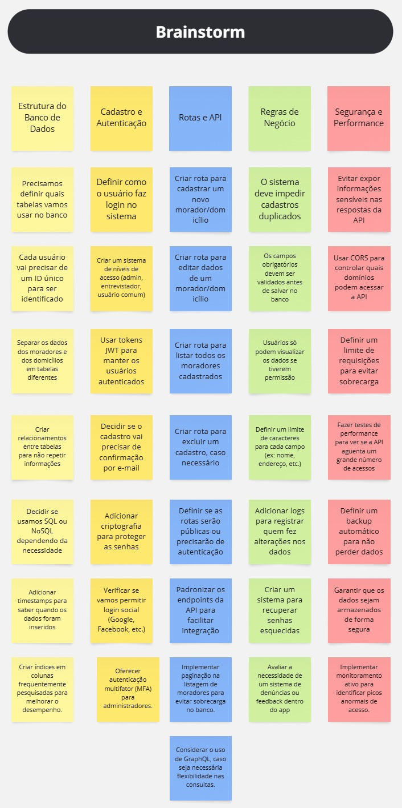

Introdução
O brainstorm é uma técnica de elicitação de requisitos que consiste em reunir a equipe e discutir sobre diversos tópicos gerais do projeto apresentados no documento problema de negócio. No brainstorm o diálogo é incentivado e críticas são evitadas para permitir que todos colaborem com suas próprias ideias.
Metodologia
A equipe se reuniu para debater ideias gerais sobre o projeto entre os dias 22/03 e 27/03, em várias sessões de brainstorming. O moderador, Fabricio de Brito, conduziu as discussões com perguntas preparadas, incentivando todo mundo a compartilhar suas ideias de forma aberta. Durante esse período, a equipe discutiu os principais pontos e definiu os primeiros passos para o desenvolvimento do projeto, com todas as respostas sendo registradas e organizadas no documento para facilitar as decisões futuras.
Brainstorm

Relatório de Brainstorm sobre Sistema de Cadastro de Moradores e Domicílios
Participantes
- Fabricio de Brito
- Lucas Kronemberger
- Paco Guimaraes
- Yago Duarte
- Yuri Durra
Estrutura do Banco de Dados
- Definir quais tabelas serão utilizadas no banco de dados.
- Cada usuário deve possuir um ID único para identificação.
- Separar os dados de moradores e domicílios em tabelas distintas.
- Criar relacionamentos entre tabelas para evitar duplicação de informações.
- Escolher entre SQL ou NoSQL conforme a necessidade do projeto.
- Adicionar timestamps para rastrear a inserção e modificação dos dados.
- Criar índices em colunas frequentemente pesquisadas para melhorar o desempenho.
Cadastro e Autenticação
- Definir o processo de login no sistema.
- Implementar níveis de acesso (admin, entrevistador, usuário comum).
- Utilizar tokens JWT para autenticação segura.
- Avaliar a necessidade de confirmação por e-mail no cadastro.
- Aplicar criptografia para proteger senhas e dados sensíveis.
- Considerar a implementação de login social (Google, Facebook, etc.).
- Oferecer autenticação multifator (MFA) para administradores.
Rotas e API
- Criar rota para cadastrar um novo morador/domicílio.
- Criar rota para editar dados de um morador/domicílio.
- Criar rota para listar todos os moradores cadastrados.
- Criar rota para excluir um cadastro, caso necessário.
- Definir se as rotas serão públicas ou protegidas por autenticação.
- Padronizar os endpoints da API para facilitar integração.
- Implementar paginação na listagem de moradores para evitar sobrecarga no banco.
- Considerar o uso de GraphQL, caso seja necessária flexibilidade nas consultas.
Regras de Negócio
- Impedir cadastros duplicados no sistema.
- Validar campos obrigatórios antes de salvar no banco.
- Garantir que os usuários só possam visualizar dados conforme seu nível de permissão.
- Definir limites de caracteres para campos como nome e endereço.
- Implementar logs de auditoria para registrar alterações nos dados.
- Criar um sistema de recuperação de senha seguro.
- Avaliar a necessidade de um sistema de denúncias ou feedback dentro do app.
Segurança e Performance
- Evitar exposição de informações sensíveis nas respostas da API.
- Configurar CORS para controlar quais domínios podem acessar a API.
- Definir limites de requisição para evitar sobrecarga e ataques DDoS.
- Realizar testes de performance para garantir estabilidade da API sob alta demanda.
- Configurar um backup automático para evitar perda de dados.
- Armazenar dados de forma criptografada e segura.
- Implementar monitoramento ativo para identificar picos anormais de acesso.
Requisitos Elicitados
| ID | Descrição |
|---|---|
| BS01 | O sistema deve utilizar um banco de dados com tabelas separadas para moradores e domicílios, criando relacionamentos entre elas. |
| BS02 | Cada usuário deve ter um ID único para garantir identificação dentro do sistema. |
| BS03 | O sistema deve ser capaz de autenticar usuários com tokens JWT para garantir sessões seguras. |
| BS04 | O sistema deve permitir diferentes níveis de acesso: admin, entrevistador e usuário comum. |
| BS05 | O cadastro de usuário deve exigir uma confirmação de e-mail para validar o endereço eletrônico fornecido. |
| BS06 | O sistema deve garantir a criptografia de senhas para aumentar a segurança dos dados dos usuários. |
| BS07 | O sistema deve impedir cadastros duplicados e garantir que os dados do usuário sejam exclusivos. |
| BS08 | As rotas da API devem ser protegidas por autenticação para garantir que apenas usuários autorizados acessem informações sensíveis. |
| BS09 | O sistema deve permitir a exclusão de cadastros de moradores e domicílios, com permissão adequada para cada nível de acesso. |
| BS10 | O sistema deve validar campos obrigatórios antes de salvar qualquer informação no banco de dados. |
| BS11 | O sistema deve implementar um sistema de recuperação de senha seguro para usuários que esquecerem suas credenciais. |
| BS12 | O sistema deve permitir o uso de login social (Google, Facebook, etc.) como uma alternativa ao cadastro tradicional. |
| BS13 | O sistema deve permitir a auditoria de alterações realizadas nas informações de moradores e domicílios, mantendo logs para rastreamento. |
| BS14 | O sistema deve implementar paginação nas rotas de listagem de moradores e domicílios para evitar sobrecarga no banco de dados. |
| BS15 | O sistema deve ter um processo de backup automático para evitar a perda de dados em caso de falhas no sistema. |
Conclusão
Através da aplicação da técnica, foi possível elicitar alguns dos primeiros requisitos do projeto.
Link para o Brainstorm
Autor(es)
| Data | Versão | Descrição | Autor(es) |
|---|---|---|---|
| 27/03/2024 | 1.0 | Criação do documento | Fabricio de Brito, Lucas Kronemberger, Paco Guimaraes, Yago Duarte, Yuri Durra |